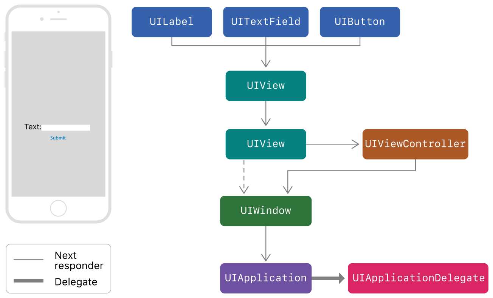

responder & responder-chain to handle events
- 从 UIWindow 逐层往里传递
- 优先最内部View响应，通过 hintTest:point,:event 确定 当前的view是否响应
- keyWindow可以响应event
- 手势如何处理？
responder
UIResponder 的子类 都可以响应 UIEvent，包括 UIView、UIViewController、UIWindow、UIApplication
FirstResponder 可以响应event
UIResponder *next = [self nextResponder];
BOOL can1 = [self canBecomeFirstResponder];
[self becomeFirstResponder];
BOOL can2 = [self canResignFirstResponder];
[self resignFirstResponder];
BOOL isFirstResponder = [self isFirstResponder];

当App接收到event，UIKit会自动 把event传递给合适的responder。如上图，点击输入框后首先会传递给UITextField，如果不响应 会继续传递给super view，直到找到相应的responder，最后到AppDelegate。
UIEvent
UIEvent type：
- touch event
- press event
- shake-motion event
- remote-control event
- editing menu message
hitTest:withEvent:
view 通过 hitTest:withEvent: 确定是否作为first reponder。
hitTest:withEvent: 从view 层级的最顶部(最上层)开始逐个判断，是否能处理event。加入能处理，则该view 就是 first responder
Gesture 如何处理？
Gesture recognizers receive touch and press events before their view does. If a view's gesture recognizers fail to recognize a sequence of touches, UIKit sends the touches to the view. If the view does not handle the touches, UIKit passes them up the responder chain.
给view添加的gesture会优先获取到touch和press event，假如gesture没有处理，则event 传递给view，进入responder chain
可以给一个viewattach 多个Gesture。系统会根据用户的交互 看是否满足某个gesture pattern。如果 match 某个gesture，则调用gesture绑定的target。如果没有match gesture，则该event会进入 responder chain
手势包括：
- UITapGestureRecognizer
- UIPinchGestureRecognizer
- UIRotationGestureRecognizer
- UISwipeGestureRecognizer
- UIPanGestureRecognizer
- UIScreenEdgePanGestureRecognizer // 发生在屏幕边缘的pan gesture
- UILongPressGestureRecognizer
多手势如何处理？
UIGestureRecognizerDelegate
//开始进行手势识别时调用的方法，返回NO则结束识别，不再触发手势，用处：可以在控件指定的位置使用手势识别
- (BOOL)gestureRecognizerShouldBegin:(UIGestureRecognizer *)gestureRecognizer;
//设置点击的范围
- (BOOL)gestureRecognizer:(UIGestureRecognizer *)gestureRecognizer shouldReceiveTouch:(UITouch *)touch{
//获取当前的触摸点
CGPoint curp = [touch locationInView:self.imageView];
if (curp.x <= self.imageView.bounds.size.width*0.5) {
return NO;
}else{
return YES;
}
}
// 设置 press范围
- gestureRecognizer:shouldReceivePress:
//是否支持多手势触发，返回YES，则可以多个手势一起触发方法，返回NO则为互斥
//是否允许多个手势识别器共同识别，一个控件的手势识别后是否阻断手势识别继续向下传播，默认返回NO；如果为YES，响应者链上层对象触发手势识别后，如果下层对象也添加了手势并成功识别也会继续执行，否则上层对象识别后则不再继续传播
- (BOOL)gestureRecognizer:(UIGestureRecognizer *)gestureRecognizer shouldRecognizeSimultaneouslyWithGestureRecognizer:(UIGestureRecognizer *)otherGestureRecognizer;
// 这个方法返回YES，第一个手势和第二个互斥时，第一个会失效
- (BOOL)gestureRecognizer:(UIGestureRecognizer *)gestureRecognizer shouldRequireFailureOfGestureRecognizer:(UIGestureRecognizer *)otherGestureRecognizer NS_AVAILABLE_IOS(7_0);
//这个方法返回YES，第一个和第二个互斥时，第二个会失效
- (BOOL)gestureRecognizer:(UIGestureRecognizer *)gestureRecognizer shouldBeRequiredToFailByGestureRecognizer:(UIGestureRecognizer *)otherGestureRecognizer NS_AVAILABLE_IOS(7_0);
参考
- 官网
- https://www.cnblogs.com/wujy/p/5821991.html
- https://juejin.im/post/5b1cf9f0e51d4506af2e9ba0
- 所以 loading 可以做成window 或者 单独的view添加 设置层 不响应 event